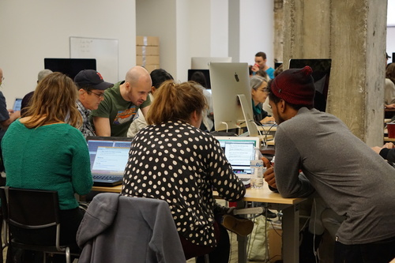
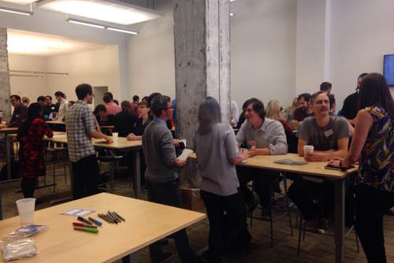

"At this time last year, I was stuck in a dead end job, was questioning my career, and felt like I wasn't living up to my potential. This year, I have a job at a place that is genuinely excited to help me learn and grow. I'm really passionate about development and couldn't be more excited to keep learning in this field."
- Anna, former student
"The internship I did with Epicodus was an awesome experience and invaluable in my job search. After completing Epicodus, I sent out quite a few resumes, and ultimately had the choice between two very interested companies. I've worked just over a month now at my new job and couldn't be happier."
- Diego, former student
"Going through this program and learning a viable skill has turned my life completely around. You helped me kindle a passion and desire for programming and I actually wake up with a smile knowing I have a job I enjoy. I feel this is something I can really excel at."
- David, former student
At Epicodus, you'll learn how to build web sites and mobile apps from top to bottom with modern technologies and practices. More importantly than any particular skill, though, you'll learn how to think like a programmer, write good code, and pick up new skills in this fast-changing industry.
Become a student Epicodus graduates work at companies as small as 3-person startups, as big as a Fortune 100 company, and everything in between. Through internship programs, job fairs, and hands-on support from our staff, we make it easy for companies to connect with our students.
Hire graduates© 2015 Epicodus, Inc.
Icons by Icons8